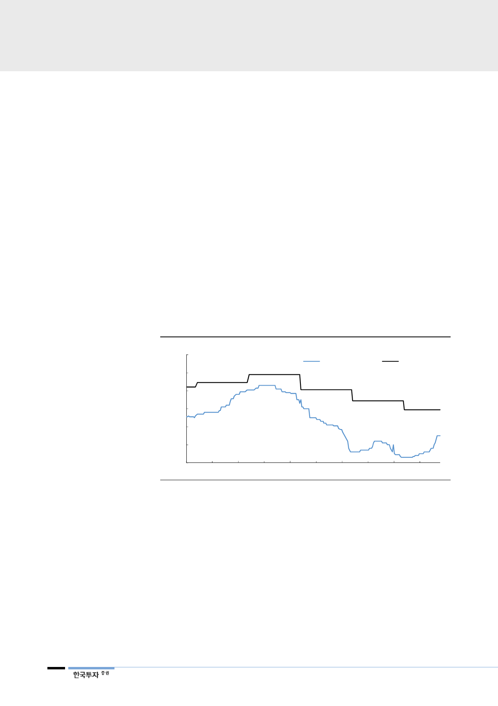

III. 우리가 우려하는 것들
광산들이 이익 극대화를 위해
연간 단위의 제련수수료
계약 단위를 분기나 월 단위로
바꾸려 할 가능성 있어
1. 벤치마크 제련수수료 계약기간 단축
우선 벤치마크 제련수수료 적용 기간이 단축될 가능성이 있다. 현재 중국을 제외
한 대부분의 제련수수료는 연간 단위다. 과거에는 아연 가격이 변동되면 제련수
수료도 연동되어 상승하거나 하락했으나(price participation) 2017년부터 이 조
건이 없어졌다. 가격 상승시 광산에게 더 유리하게 조건이 변경된 것이다. 2018
년에도 이 조건은 부활되지 않았다. 여기에 더해 2019년에는 제련수수료 자체의
적용 기간이 분기 또는 월 기준으로 단축될 가능성을 배제할 수 없다. 만약 2018
년부터 제련수수료를 연간 단위에서 분기 단위로 변경했다면 광산들은 더 많은
이익을 낼 수 있었다. 중국 spot 제련수수료는 75달러까지 급등했지만 2018년
벤치마크 제련수수료는 147달러로 이의 2배에 달한다. 만약 2018년부터 spot
제련수수료를 기준으로 분기 또는 월 단위로 벤치마크 제련수수료가 변동되는 조
건으로 변경되었다면 광산들의 이익은 지금보다 배 이상이었을 것이다. 광산들이
이를 모르지 않을 것이다.
[그림 7] 중국 spot 아연 제련수수료 vs 벤치마크 아연 제련수수료
(달러/톤)
300
250
중국 아연 spot TC
벤치마크 TC
200
150
147
100
75
50
0
2013
2014
2015
2016
2017
자료: Wind, 한국투자증권
철광석의 경우 2010년부터
가격 계약 기간 연간
단위에서 분기 및 월 단위로
변경해 높은 spot 가격 반영
40년 넘게 이어진 관행이 하루 아침에 변경되지 않을 것이라는 반론을 제기할 수
도 있다. 그런데 계약 기간이 연간에서 분기 또는 월 기준으로 변경된 경우가 있
다. 바로 철광석이다. 2009년까지 광산과 철강사는 매년 4월부터 다음해 3월까
지 철광석을 고정 가격으로 사고 팔았다. 그런데 2010년부터는 분기 심지어 월
별로 철광석 구매 가격이 변동되었다. 이러한 변화의 배경은 철광석의 공급 부족
에 있었다. 철광석 공급부족으로 2009년 하반기 spot 철광석 가격이 급등하자
광산들이 2010년 2분기부터 연간 계약을 폐지하고 분기 또는 월 단위의 공급 계
약으로 변경했다. 계약 기간 변경 이후 철광석 계약 가격은 spot 가격과 근접해
졌다. 비철금속도 이렇게 하루 아침에 계약이 변경되지 않는다고 장담할 수 없다.
6